Ubuntu/GNOME 桌面程序指南
作者：TeliuTe 来源：基础教程网
五十二、Evolution 邮件设置 返回目录 下一课在这里，你可以设置 Evolution 邮箱客户端，用来接收自己的电子邮件；
1、Evolution 邮件和日历
1）点菜单“应用程序 - Evolution 邮件及日历”，打开Evolution 邮件和日历窗口；
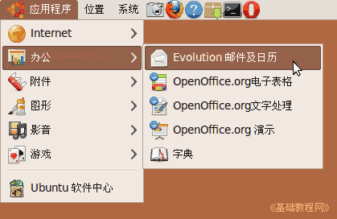
2）首先出来的是欢迎助手，点“前进”；
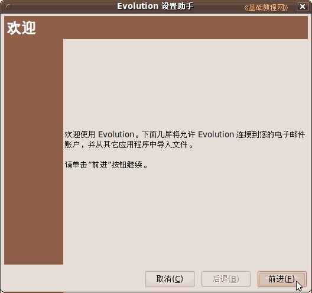
3）接下来是备份恢复，没有就直接点“前进”；
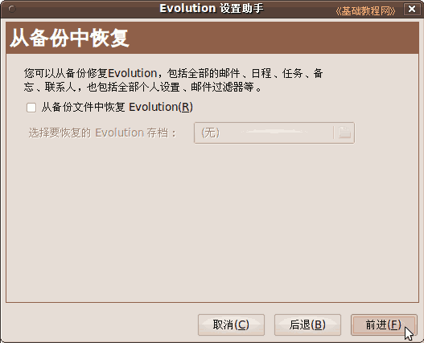
4）接下来输入自己的邮箱信息，用户名、地址，点“前进”；
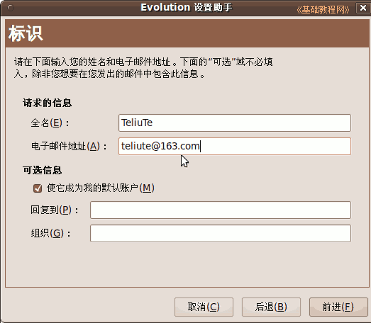
5）在帐户设置中，服务器是一般是 pop3 的，可以登录邮箱查一下，用户名就是登录时输入的；
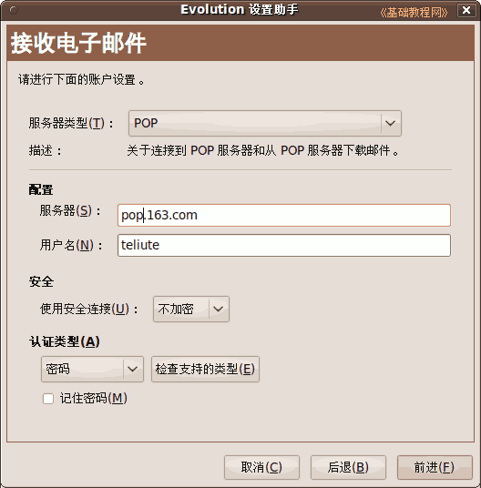
6）接下来的选项打勾保留邮件，可以根据需要设置；
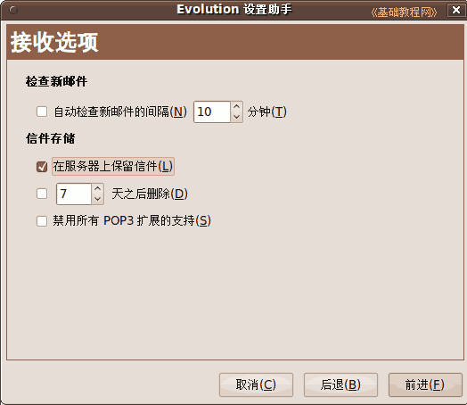
7）接下来的 smtp 中，输入邮箱服务器的地址，一般是 smtp 开头，
打勾“服务器需要验证”，输入用户名；
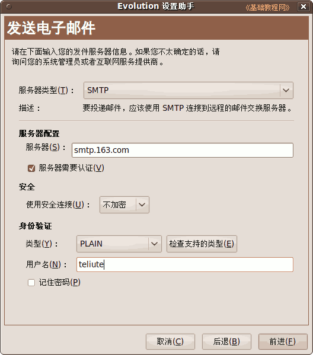
8）接下来帐户名称，用默认即可，点“前进”；
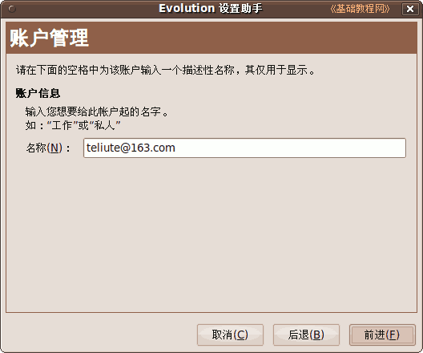
9）然后点“应用”完成 Evolution 邮箱设置；
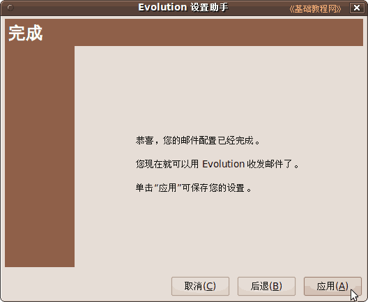
10）在打开的窗口中，点“发送/接收”可以收发邮件，点“新建”可以写邮件，更多请参阅：../lesson69/lesson69.html
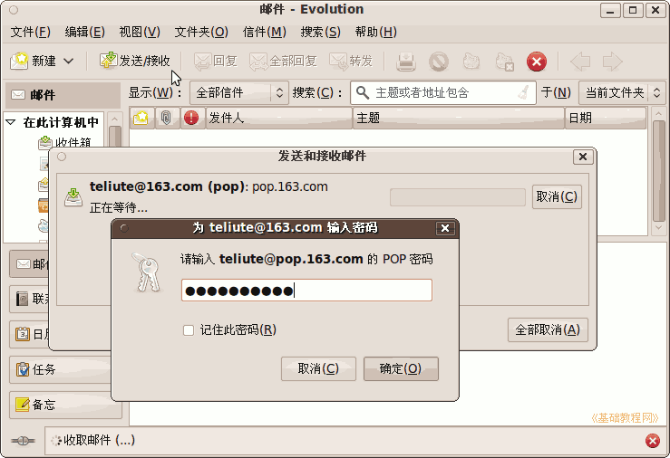
11）以后要添加帐号或修改，只需点菜单“编辑 - 首选项”即可，
想使用密钥加密，则要在密钥管理器中生成该邮件的密钥，并签署和信任，写信时点菜单“安全 - pgp 加密”；
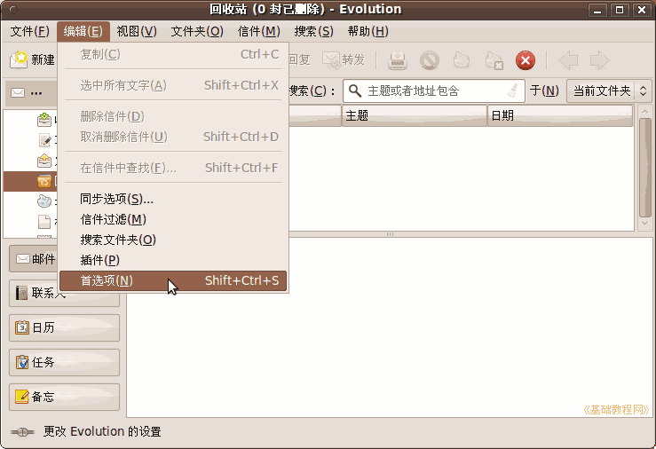
本节学习了Evolution 邮件和日历的基础知识，如果你成功地完成了练习，请继续学习下一课内容；
本教程由86团学校TeliuTe制作|著作权所有
基础教程网：http://teliute.org/
美丽的校园……
转载和引用本站内容，请保留作者和本站链接。